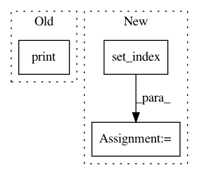

9783be1abade3ea6f9700c6d7eceff06eb76c168,QUANTAXIS/QAFetch/QATdx.py,,QA_fetch_get_stock_day,#Any#Any#Any#Any#Any#,86
Before Change
date=str(list(api.to_df(api.get_security_bars(9, market_code, code,index_of_end, 1))["datetime"])[0])[0:10]
judge_date(date,index_of_end)
judge_date(date,index_of_end)
print(api.to_df(api.get_security_bars(9, market_code, code,index_of_end, 1)))
index_length=index_of_index_end+1-index_of_index_start
//data = api.get_security_bars(9, market_code, code,index_of_end, index_length) // 返回普通list
data = api.to_df(api.get_security_bars(9, market_code, code,index_of_end, index_length)) // 返回DataFrame
After Change
//data = api.get_security_bars(9, market_code, code,index_of_end, index_length) // 返回普通list
data = api.to_df(api.get_security_bars(9, market_code, code,index_of_end, index_length)) // 返回DataFrame
data["date"]=data["datetime"].apply(lambda x:x[0:10])
data = data.set_index("date")
data = data.drop(["year","month","day","hour","minute","datetime"],axis=1)
return data[start_date:end_date]
def QA_fetch_get_stock_list(code, date,ip="119.147.212.81",port=7709):
In pattern: SUPERPATTERN
Frequency: 3
Non-data size: 3
Instances
Project Name: QUANTAXIS/QUANTAXIS
Commit Name: 9783be1abade3ea6f9700c6d7eceff06eb76c168
Time: 2017-08-14
Author: yutiansut@qq.com
File Name: QUANTAXIS/QAFetch/QATdx.py
Class Name:
Method Name: QA_fetch_get_stock_day
Project Name: bashtage/linearmodels
Commit Name: f373fff0861a23f1fb4a82a108cbd7817761083d
Time: 2017-03-24
Author: kevin.k.sheppard@gmail.com
File Name: experiment.py
Class Name:
Method Name:
Project Name: QUANTAXIS/QUANTAXIS
Commit Name: 27ff09c6c58c03ca3c4104f25442876f9c86e466
Time: 2018-08-11
Author: 604829050@qq.com
File Name: QUANTAXIS/QAFetch/QAQuery_Advance.py
Class Name:
Method Name: QA_fetch_stock_block_adv